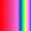
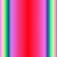
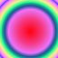
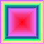
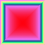
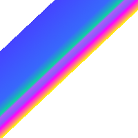
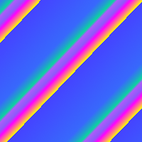
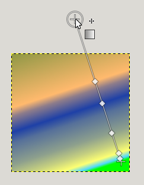
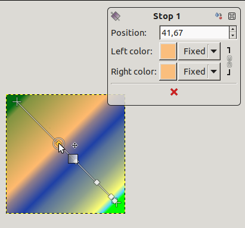

This tool fills the selected area with a gradient from the foreground and background colors by default, but there are many options. To make a gradient, drag the cursor in the direction you want the gradient to go and you release the mouse button when you feel you have the right position and size of your gradient. The softness of the gradient depends on how far you drag the cursor. The shorter the drag distance, the sharper it will be.
If you click and drag outside the selection, only a part of the gradient will appear in the selection.
There are an astonishing number of things you can do with this tool, and the possibilities may seem a bit overwhelming at first. The two most important options you have are the Gradient and the Shape. Clicking the Gradient button in the tool options brings up a Gradient Select window, allowing you to choose from among a variety of gradients supplied with GIMP; you can also construct and save custom gradients. Further information about gradients can be found in Section 6, “Gradients” and Section 3.5, “Gradients Dialog”.
For Shape, there are 11 options: Linear, Bilinear, Radial, Square, Conical (symmetric), Conical (asymmetric), Shaped (angular), Shaped (spherical), Shaped (dimpled), Spiral (clockwise), and Spiral (counterclockwise); these are described in detail below. The Shaped options are the most interesting: they cause the gradient to follow the shape of the selection boundary, no matter how twisty it is. Unlike the other shapes, Shaped gradients are not affected by the length or direction of the line you draw: for them as well as every other type of gradient you are required to click inside the selection and move the mouse, but a Shaped appears the same no matter where you click or how you move.
![[Tip]](images/tip.png)
|
Tip |
|---|---|
|
Check out the Difference option in the Mode menu, where doing the same thing (even with full opacity) will result in fantastic swirling patterns, changing and adding every time you drag the cursor. |
There are different possibilities to activate the tool:
-
From the main menu: → → .
-
By clicking the tool icon in the Toolbox.
-
By pressing the G keyboard shortcut.

Normally, tool options are displayed in a window attached under the Toolbox as soon as you activate a tool. If they are not, you can access them from the main menu through → → which opens the option window of the selected tool. The available tool options can also be accessed by double clicking the corresponding tool icon in the Toolbox.
- Mode, Opacity
- See the Common Paint Tool Options for a description of tool options that apply to many or all paint tools.
- Gradient
-
A variety of gradient patterns can be selected from the drop-down list. The tool causes a shading pattern that transitions from foreground to background color or introduces others colors, in the direction the user determines by drawing a line in the image. For the purposes of drawing the gradient, clicking on the reverses the gradient direction with the effect, for instance, of swapping the foreground and background colors.
On the right hand, a button to open the Gradient Editor dialog.
- Blend Color Space
-
-
Perceptual RGB: When this option is chosen, the Blend Color Space is sRGB. This is the default.
-
Linear RGB: When this option is chosen, the Blend Color Space is linearized sRGB (defined by the sRGB primaries and a linear tone reproduction curve). This results in gradients that resemble the physical behavior of light. This option should be used if the color, as measured with a colorimeter, should change linearly with the distance from the color stops within the gradient.
-
CIE Lab: When this option is chosen, the Blend Color Space is CIE L*a*b*. This perceptionally uniform color space is used to model human perception of color blending.
-
- Shape
-
GIMP provides 11 shapes, which can be selected from the drop-down list. Details on each of the shapes are given below.
Figure 14.55. Examples of gradient shapes

Linear

Bi-Linear

Radial
- Linear
-
This gradient begins with the foreground color at the starting point of the drawn line and transitions linearly to the background color at the ending point.
- Bi-Linear
-
This shape proceeds in both directions from the starting point, for a distance determined by the length of the drawn line. It is useful, for example, for giving the appearance of a cylinder.
- Radial
-
This gradient gives a circle, with foreground color at the center and background color outside the circle. It gives the appearance of a sphere without directional lighting.
- Square, Shaped
-
Figure 14.56. Square-shaped gradient examples

Square

Shaped (angular)

Shaped (spherical)

Shaped (dimpled)
There are four shapes that are some variant on a square: Square, Shaped (angular), Shaped (spherical), and Shaped (dimpled). They all put the foreground color at the center of a square, whose center is at the start of the drawn line, and whose half-diagonal is the length of the drawn line. The four options provide a variety in the manner in which the gradient is calculated; experimentation is the best means of seeing the differences.
- Conical (symmetric), Conical (asymmetric)
-
The Conical (symmetrical) shape gives the sensation of looking down at the tip of a cone, which appears to be illuminated with the background color from a direction determined by the direction of the drawn line.
Conical (asymmetric) is similar to Conical (symmetric) except that the "cone" appears to have a ridge where the line is drawn.
- Spiral (clockwise), Spiral (counter-clockwise)
-
The Spiral shape provide spirals whose repeat width is determined by the length of the drawn line.
- Repeat
-
-
None (extend) as default.

-
None (truncate): areas before and after endpoints are truncated.

-
Sawtooth wave: the Sawtooth pattern is achieved by beginning with the foreground, transitioning to the background, then starting over with the foreground.

-
Triangular wave: starts with the foreground, transitions to the background, then transitions back to the foreground.

-
- Offset
-
The Offset value permits to increase the “slope” of the gradient. It determines how far from the clicked starting point the gradient will begin. Shaped forms are not affected by this option.
- Dithering
-
Dithering is explained in the Glossary
- Adaptive Supersampling
-
This is a more sophisticated means of smoothing the "jagged" effect of a sharp transition of color along a slanted or curved line. To find out what works best in your case, you will have to test this yourself.
- Instant mode
-
![[Warning]](images/warning.png)
Warning The option must be activated (with Shift also) before starting drawing gradient.
When this option is checked, the gradient line disappears as soon as you release the mouse button. You can't edit color stops before applying the gradient fill.
- Modify active gradient
-
When this option is checked, the custom gradient is not created automatically and must be created manually. The option can be activated before starting drawing gradient or if the active gradient is not the custom gradient. Allows changing user-writable gradients directly rather than creating copies of them.


- On-canvas editing
-
All the Gradient Editor dialog features are available directly on canvas. You can create and delete color stops, select and shift them, assign colors to color stops, change blending and coloring for segments between color stops, create color stops from midpoints.
Select a gradient in the gradient dialog. Click and drag on canvas. A line is drawn and the gradient is displayed. You can edit this gradient by moving the mouse pointer on this line. As soon as you try to edit gradient, GIMP creates a custom gradient, which is a copy of the selected gradient. It becomes the active gradient and will be preserved across sessions. Here, we use the Abstract3 gradient.

The Abstract3 gradient, with endpoints
At both ends of the line, you can see a Start endpoint and an End endpoint. Click and drag an endpoint (the mouse pointer is accompanied with a moving cross) to move it where you want on your screen. A small window appears showing data about the selected endpoint: the position of the mouse (coordinate origin is the upper left corner of image or selection), the starting (left) and the ending (right) color of the gradient.

End point moved
![[Note]](images/note.png)
Note In you only move endpoints, the custom gradient is not created yet.
On the line, you can see several small squares. These are Stops that divide gradient into segments. You can edit segments separately. Click and drag stops to move them (the active endpoint takes a yellow color). As soon as you move a stop, the custom gradient is created. The small data window shows a button that allow you to remove the active stop.

Stop point moved and data window
If you move the mouse pointer on the line, a Midpoint shows up. Then, the small data window has two buttons:
 to create a new stop at midpoint, and
to create a new stop at midpoint, and
 to center midpoint.
to center midpoint.

For Stops and Midpoints, Position refers to the gradient line: 0 is start endpoint, 100 is end endpoint.
Blending: you can change the blending mode between two stops, using the drop-down list. The Step option creates a hard-edge transition between the two adjacent color stops at the midpoint.
Changing color: in stop and end data windows, you have color buttons with a drop-down list. The default option is Fixed; this means that color choice will be independent from foreground and background colors. Click on a color button to open a color selector.
- Key modifiers
-
Ctrl is used to create straight lines that are constrained to 15 degree absolute angles.
Alt or Ctrl+Alt to move the whole line.
- The Gradient Editor